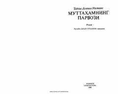

MPTasodiflar tufayli yuqori martabaga erishgan oddiy muttaham haqidagi qiziqarli roman.
Polshalik yozuvchi Tadeush Dolenga-Mostovichning ushbu romanida oddiy muttaham Nikodim Dizmaning tasodifiy voqealar sabab yuqori davlat lavozimiga ko'tarilishi hikoya qilinadi. Asar jamiyatdagi illatlar va insoniy qadriyatlar haqida hikoya qiluvchi qiziqarli ijtimoiy-siyosiy satira hisoblanadi.